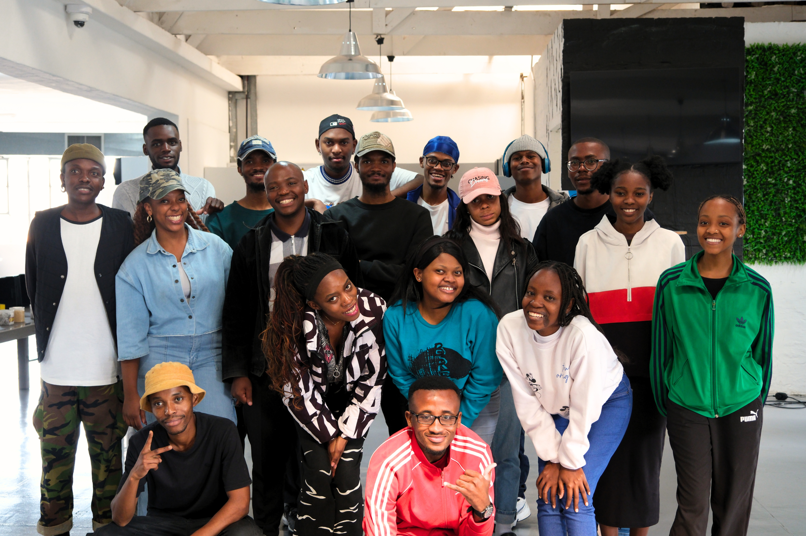

First big spark
A moment, person, or device that made technology feel magical.
A walk through the sparks, screens, stories, games, books, communities, and quiet moments that shaped how I think, create, and build.
A moment, person, or device that made technology feel magical.

The interactive world that made me curious.

The place where ideas become working screens.
Before the portfolio, there was curiosity: pressing buttons, asking why, and wanting to understand the systems behind the screen.
I started seeing technology as more than devices. It became a way to solve problems, express ideas, and build useful things from almost nothing.

Tech YouTuber who inspired my interest in technology.

First technology I owned.
.jfif)
Durability and battery that last for days things we cant say about mordern smartphones.
A collection of books, movies, games, creators, and communities that sparked my passion for technology and inspired my journey into software development.
 Books
Books
Showed me that consistency beats motivation and that small improvements lead to big results.
 Movies
Movies
Inspired me to think beyond limits and appreciate solving impossible problems.
 TV Shows
TV Shows
A series that made cybersecurity, coding, and technology feel exciting and meaningful.
 Video Games
Video Games
Its futuristic world deepened my interest in software, AI, and interface design.
Made learning web development fast, fun, and approachable.
 Developers I Admire
Developers I Admire
His work with Vercel and Next.js inspired me to build modern web experiences.
 Technology
Technology
The editor that became my home while learning to build software.

CommunitiesThe community that transformed my curiosity into practical software development skills.
I love the moment when an idea stops being abstract and starts responding to clicks, inputs, and real people. Building lets me combine logic, design, patience, and personality into something someone can actually use.
Every bug teaches discipline. Every finished screen builds confidence. Every project reminds me that technology is not just about code; it is about turning curiosity into momentum.
The parts of my life that keep me grounded, creative, and human.

sounds that help me focus.
 - ONE EYE SYMBOLISM.jfif)
Game I enjoy outside work.
.jfif)
staying sharp and consistent.

Design, and ideas.

No DNA just RSA.

Place and perspectives.